China Employee Termination: War-Room Brief for Foreign Employers (Hourly Testing Run)
Key takeaways
- Foreign employers should run China termination cases like a war room: clear command chain, live risk board, and non-negotiable control gates.
- Most disputes are not caused by choosing a completely wrong legal route; they are caused by execution drift across HR, legal, payroll, and manager communication.
- Pulse-style war-room updates improve decision speed by making blockers explicit and assigning immediate owners.
- Legal route approval and operational readiness are separate gates; both must be green before action.
- Legal depth should remain as appendix support while the primary narrative stays concise and action-first.
Pulse situation report
Current signal for foreign employers: route-only decision models remain too fragile for China termination execution. A stronger model is command-style governance: one risk board, one owner per blocker, one rule for go/no-go.
This run rotates to a war-room briefing format to maximize readability and decision value for non-specialist leadership.
Plain-language legal/regulatory context first
China’s Labor Contract Law sets legal boundaries for termination and severance obligations. State Council implementation regulations and SPC interpretation shape how labor disputes assess procedural fairness, evidentiary reliability, and consistency between the employer’s stated rationale and documented execution. For foreign operators, the practical bottom line is simple: route legality, evidence chronology, communication behavior, and settlement/payment handling must stay aligned from start to closure.
If alignment breaks at any stage, defensibility can deteriorate quickly even where initial legal analysis looked acceptable.
War-room board: command questions and immediate actions
Command Question 1: Is route integrity still valid?
Risk pattern: route assumptions become stale after fact changes.
War-room action:
- log route assumptions in a live memo
- trigger mandatory revalidation on material fact change
- freeze progression until route owner and legal owner re-approve
Command Question 2: Is evidence mission-ready?
Risk pattern: large file, weak chronology.
War-room action:
- maintain owner-verified chronology index
- track contradictions with SLA and escalation path
- block employee-facing steps if critical contradictions remain unresolved
Command Question 3: Is communication controlled?
Risk pattern: manager script drift undermines legal narrative.
War-room action:
- one final script version only
- manager briefing confirmation required
- issue immediate corrected written summary if drift occurs
Command Question 4: Is settlement architecture coherent?
Risk pattern: settlement wording and payroll mapping diverge.
War-room action:
- legal/payroll co-sign itemized worksheet
- verify timing and component definitions
- no external commitment before worksheet lock
Command Question 5: Is tax interpretation stable?
Risk pattern: late uncertainty around payout tax handling.
War-room action:
- maintain one tax-treatment note
- validate assumptions with local advisors where needed
- align employee-facing explanation with payroll logic
Command Question 6: Is command authority active?
Risk pattern: no empowered decider during cutover.
War-room action:
- confirm primary + backup authority before go-live
- no action if authority coverage is missing
- escalate immediately when authority gap appears
Command Question 7: Is closure truly complete?
Risk pattern: case closed at signature without payment proof and archive integrity.
War-room action:
- enforce closure gate: signature + payment proof + archive completeness
- reopen status automatically if any proof item is missing
Practical implications for foreign employers
- HQ/Board: demand a war-room board view, not only legal memo conclusions.
- Regional HR: treat unresolved critical blockers as automatic no-go events.
- Payroll/Finance: move upstream as co-owners of settlement/tax risk quality.
- Managers: script discipline is a compliance obligation with measurable legal impact.
This operating style improves both speed and defensibility because action priorities are explicit and synchronized.
Scenario snapshots
Scenario A: Route integrity breach contained early
New facts changed route assumptions one day before communication. War-room triggered revalidation hold; route was adjusted and supporting rationale updated. Outcome: delayed launch, lower dispute exposure.
Scenario B: Evidence contradiction found in final prep
Chronology gap surfaced in final review. Team invoked blocker hold, remediated evidence package, and resumed only after owner sign-off. Outcome: stronger defensibility posture.
Scenario C: Settlement coherence repaired pre-commitment
Payroll detected component mismatch in settlement worksheet. War-room blocked communication until legal/payroll co-sign alignment completed. Outcome: fewer post-signature questions and lower reopen risk.
Daily war-room SOP
- Open case and initialize seven-command board.
- Assign owner/SLA for each active blocker.
- Run legal/payroll parallel checks on command questions 4 and 5.
- Confirm manager communication controls before employee-facing steps.
- Apply go/no-go gate on unresolved critical blockers.
- Execute with live exception log and command updates.
- Close only when command question 7 is fully satisfied.
Required document checklist
- live route memo + revalidation triggers
- chronology map + contradiction register
- final script package + briefing evidence
- settlement worksheet + tax treatment note
- authority matrix (primary + backup)
- war-room blocker log with owner/SLA
- payment proof + reconciliation packet
- closure audit and archive map
Exception response matrix (war-room quick use)
- route assumption invalidated → rerun route gate immediately
- chronology contradiction → hold and remediate before next step
- script drift event → corrected written summary + legal impact review
- payout/tax mismatch → relock worksheet and reapprove
- authority unavailable → activate backup and suspend progression
- closure proof missing → reopen case status
System implementation notes
Track these fields in workflow tooling:
- command question status (1-7)
- owner + SLA + escalation timestamp
- route delta and decision log
- script version + acknowledgment log
- settlement lock version + payroll verifier
- closure completeness score
Control rules:
- hard stop on unresolved critical command blockers
- mandatory re-approval on route/script/settlement changes
- immutable log for command-state transitions
- weekly dashboard for repeated blocker categories
Governance cadence for multinational teams
- Weekly (30 min): unresolved blockers, SLA breaches, cutover readiness
- Monthly (60 min): repeat-failure patterns, KPI trends, control recalibration
Cadence-based governance prevents ad hoc firefighting and improves consistency across entities and time zones.
KPI pack for leadership
- unresolved critical blockers
- blocker aging over SLA
- script-drift incident frequency
- settlement relock rate
- closure lag (signature to verified close)
- post-close reopen rate (30-day)
If two or more KPIs degrade for two consecutive cycles, run mandatory cross-functional corrective review.
Common mistakes and prevention
- Mistake: route-only confidence
Prevention: enforce route + execution command gates.
- Mistake: late payroll involvement
Prevention: pre-commitment co-sign requirement.
- Mistake: authority ambiguity at cutover
Prevention: mandatory primary/backup confirmation.
- Mistake: closure on signature only
Prevention: proof-based closure gate.
What to do this week
- Launch a one-page war-room board template for active cases.
- Define critical-blocker auto-hold thresholds.
- Enforce legal/payroll co-sign before commitments.
- Assign backup decision authority on every case.
- Start weekly KPI review and monthly recalibration.
- Add city-level overlays with local counsel guidance.
What to watch next
- continued scrutiny on procedural coherence and evidence quality
- sustained sensitivity around payout/tax explanation consistency
- local variation requiring periodic threshold tuning
FAQ
Is war-room governance legally required?
No. It is an operational governance model to improve quality and defensibility.
Can smaller teams use this format?
Yes. Start with command questions 1-5, then expand.
Why is this useful for foreign clients?
It translates legal complexity into clear command decisions and ownership.
Is negotiated termination always lower risk?
Not automatically; execution coherence remains decisive.
When should external PRC counsel be mandatory?
High-risk unilateral routes, protected-status concerns, restructuring, and multi-city complexity.
Legal depth appendix
This brief relies on the PRC Labor Contract Law, State Council implementation regulations, and SPC labor-dispute interpretation. Together, these anchors indicate that legality, procedural fairness, and evidentiary reliability are jointly assessed in dispute contexts.
Disclaimer
This content is informational only and does not constitute legal, tax, or employment advice. Seek qualified PRC legal and tax advice for case-specific matters.
Sources
- National People’s Congress — Labor Contract Law of the PRC (English), 2007-12-13: http://www.npc.gov.cn/zgrdw/englishnpc/Law/2007-12/13/content_1384064.htm
- State Council — Implementation Regulations of the Labor Contract Law (Decree No. 535), 2008-09-18: https://www.gov.cn/gongbao/content/2008/content_1124615.htm
- Supreme People’s Court — Interpretation on Labor Dispute Application Issues (Fa Shi [2020] No. 26), 2020-12-29: https://www.court.gov.cn/fabu/xiangqing/243981.html
- China Briefing / Dezan Shira — Employee Termination in China, 2025-10-17: https://www.china-briefing.com/news/employee-termination-in-china/
- Littler — Key Recent Developments in China’s Employment Law, 2024-03-20: https://www.littler.com/news-analysis/asap/key-recent-developments-chinas-employment-law-china-us-comparative-perspective
- PwC Worldwide Tax Summaries — PRC Individual Taxes on Personal Income, 2025-01-15: https://taxsummaries.pwc.com/peoples-republic-of-china/individual/taxes-on-personal-income
Need local employment support in China?
If you need a compliance-first partner for hiring, payroll, and risk controls in China, China-Payroll.com can help evaluate the right setup.
Image Prompt Pack
Create a 16:9 hero image for article title: 'China Employee Termination: War-Room Brief for Foreign Employers (Hourly Testing Run)'. Scene: global operations team evaluating workforce model options for China market entry. Include motifs: decision matrix, org c…